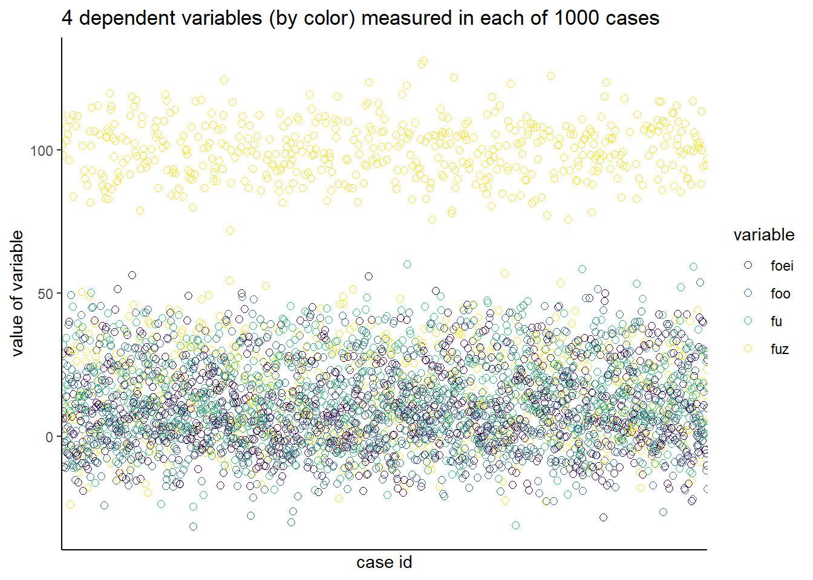
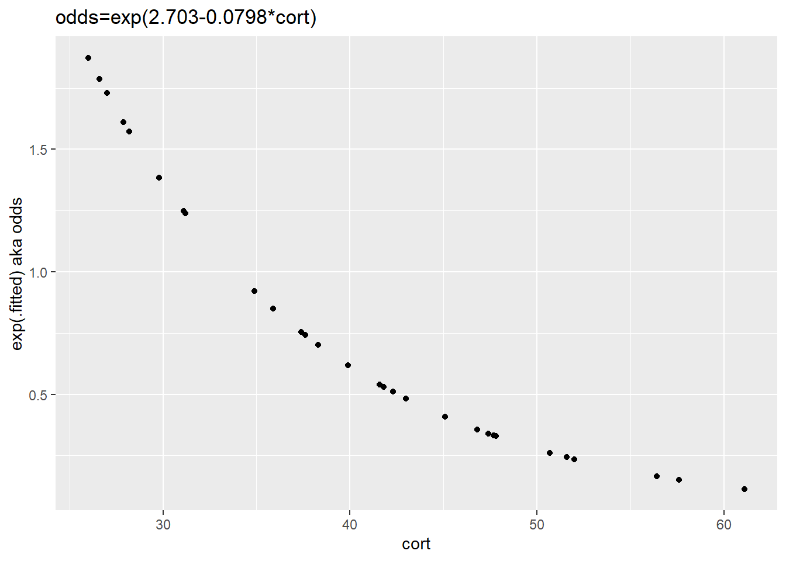

Chapter 34 Non-linear regression
Nonlinear models explain data arising from nonlinear processes. This is pretty important considering how so many processes in biological systems are nonlinear.
Conceptually, statistical analysis involving nonlinear models is almost identical to that for linear models. We have data. Just as for linear models, regression customizes the fit of some nonlinear model to the data. The main difference is that there are many different nonlinear models to choose from. Furthermore, every model has parameters that are coupled to specific biological meanings. Put another way, nonlinear models give you the ability to parameterize more biological functions than is possible with linear regression.
It’s not necessary to know learn every nonlinear model. Chances are that if you need nonlinear regression in your work there is a pretty good chances that you’ll find yourself specializing in just one or a few models, which you’ll get to know very well.
For example, if your bread and butter assay is some sort of stimulus-response measurement, chances ae you’ll use a hyberbolic function. If your bread and butter is doing time-based assays, chances are you’ll use one of the exponential growth, association or decay functions. Binding assays are mass-action based, from which a basic hyperbolic function is derived. If you do enzyme assays there are several functions that fall out of the Michaelis-Menten kinetics paradigm (which are also derivatives of the hyperbolic function).
My purpose is not to go over all of these. In fact, I encourage you to go to the GraphPad Prism Statistics Guide to explore this world. GraphPad offers an excellent online resource for nonlinear regression, including a couple of dozen different functions. Most of what I know about nonlinear regression I learned from GraphPad. I doubt there is better software than Prism for nonlinear modeling of biological systems. Including R.
34.1 Uses for nonlinear regression
Nonlinear regression has three main uses
- Artistic
- Interpolation (and simulation)
- Conducting statistical inference
Sometimes we have nonlinear data and all we want to do is draw a pretty line through the points. That’s what I mean by an artistic use. The objective is purely visual.
Other times we have measured values of \(Y\) for which we want to impute values of \(X\). That’s achieved by nonlinear regression of an \(X,Y\) standard curve (eg, ELISA). Conceptually related to this is simulating nonlinear data using fixed parameters. The latter encompasses several use cases, from Monte Carlo-based experimental planning to creating explanatory figures.
The most common statistical use is to estimate the parameter values of a nonlinear function that best fits some sample data. We’re either deriving these parameter values as “constants” that represent our results. Or we can ask whether experimental manipulation changes these parameter values. For example, does a mutation change the \(K_D\) of a drug for a receptor or the \(K_m/V_{max}\) ratio of an enzyme?
34.2 Nonlinear models and parameters
A nonlinear model is just an equation or function that describes the relationship between two variables, \(X\) and \(Y\). The shape of the relationship is dictated by the equation’s parameters, such that the outcome variable \(Y\) is determined by a nonlinear function of a predictor variable \(X\).
For example, in the well known Michaelis-Menten (M-M) enzyme kinetic schema, the enzyme activity is measured as its initial velocity \(v_i\) at various substrate concentrations, \(S\). The outcome variable is \(v_i\), and the predictor variable is \(S\). Their relationship is determined by the parameters \(K_m\) and \(V_max\) through a function known as the Michaelis-Menten model \[v_i=\frac{V_{max}\times S}{K_m + S}\].
In a generic statistical notation we might otherwise refer to these two parameters as \(\beta_0\) and \(\beta_1\), respectively. Indeed, the M-M is just a special use case for a more general hyperbolic function applicable to a diverse array of stimulus-response phenomena. Here, I’ve added the Hill coefficient, \(h\), to generalize the relationship further. The hyperbolic function is steeper when \(h>1\) and shallower when \(h<1\). In the M-M equation above \(h\) was not specified as being different than 1. \[Y=\frac{\beta_0\times X^h}{\beta_1^h + X^h}\]
These nonlinear equation parameters have important physical meaning. In the M-M case, one describes the maximal enzymatic activity in the system, while the other describes the concentration of substrate necessary for half-maximal enzymatic activity. The Hill coefficient defines the steepness of the relationship between the stimulus and response, which could infer positive or negative cooperativity.
34.3 How does that fitting happen?
The short answer is usually by the least squares method. That’s the case for R’snls function.
The fitting involves iterative cycles of computer-assisted changes in parameter values. Each change is followed by a least squares check to see if the residuals have been minimized. This process continues until “the least squares solution” is arrived at. After this point, the fit cannot be improved, having reached the “best fit” solution.
You have to use scientific judgement to select the most appropriate model prior to this fitting process. It’s not possible to just dump in some \(x,y\) data and instruct the software to find the best model or to create one.
Supervision is required. In fact, R requires the user to enter some pretty good initial estimates of the model parameters. Without these the fitting can go off track and the iterations fail to converge on a best fit solution.
This means you need to have a good idea of why each part of a nonlinear model represents.
34.3.1 Selecting the right model
Figure 34.1: Choosing the right model for your data is a scientific decision.
Once you realize you have a nonlinear process, your scientific judgement drives your selection of the most appropriate model. You simply reach into your equation shelf to select a function, based upon your expertise with the biological system.
For example, the hyperbolic relationship describes the binding of a ligand to a protein, creating a ligand-protein binding complex, \(B\); \[B=\frac{B_{max}\times L}{K_D + L}\], where \(L\) is the ligand concentration, \(B_{max}\) is the maximal number of ligand binding sites in the preparation, and \(K_D\) is the equilibrium dissociation constant, in concentration units. Therefore, \(B\) is the level of binding at a given concentration of \(L\), which saturates at \(B_{max}\) and where half-maximal binding is when \(L=K_D\).
If there is scientific reason to explore whether the binding is complex, for example, that there may be cooperativety, the model can be adapted by adding a Hill slope parameter, \(h\). In the equation above, \(h=1\) and is left unstated. Incorporating a \(h\) parameter in a regression can lead to a model that fits the data better than would a model without the Hill slope. \[B=\frac{B_{max}\times L^h}{K_D^h + L^h}\]
Data that is steeper or shallower have \(h>1\) and \(h<1\), respectively.
Alternately, an even more complex binding model might be suitable. For example, the biological material may have a combination of two binding sites for the ligand, each having a different \(K_D\) value: \[B=\frac{B_{max_1}\times L}{K_{D_1} + L}+\frac{B_{max_2}\times L}{K_{D_2} + L}\]
We’ll discuss how to test statistically whether the more complex two-site model
Often, we do stimulus response experiments over a wide range of predictor values, so it is more convenient to work with a semi-log version of the function: \[B=\frac{B_{max}\times log10L^h}{log10K_D^h + log10L^h}\]
When performing time-series experiments, many outcome responses can be modeled using exponential association or decay functions (see the Modeling mRNA stability example below): \[Y=Y_0e^{-kt}\]
Rythmic phenomenae can be modeled using sine-wave functions (eg, \(Y=\alpha sin\frac{2\pi}{\lambda}X+\varphi\)).
Virtually any nonlinear process can be modeled with a high-order polynomial function (eg,\(Y=\beta_0 + \beta_1X + \beta_2X^2 + \beta_3X^3 + \beta_4X^4 + \beta_5X^5\) ), though it can be hard to know exactly what are the physical parameters that correspond to those coefficients. Polynomials can give you incredibly good fits to data, but the explosion of parameters that it takes to gain a perfect ft can be uninterpretable. Thus, model parsimony is often a desirable trait.
34.3.2 Modeling mRNA stability by one-phase exponential decay
When the production of some biological molecule within a system is stopped and then is measured over time its levels typically fall. Such processes can be modeled using an exponential decay function describing a first-order kinetic process. First order kinetic processes are notable in having a constant half-life. One can imagine a whole host of experiments to do to mess around with a system and then detecting whether some manipulation had an impact on a process by measuring the half-lives of things associated with it.
The stability of mRNA’s and proteins, for example, can be monitored and quantified this way. For example, mRNA’s with very short half-lives are considered more unstable than those with longer half-lives.
If we stop the transcription of a gene, what is the half-life of its mRNA in a cell? Let’s answer that question by nonlinear regression using a one-phase exponential decay model.
Such a model would describe mRNA levels, \(Y\), at a given time \(X\) over the course of a time series, and takes on the form
\[y=(y_{max}-y_{min})e^{-kx}+y_{min}\]
In this equation \(y\) represents the value for an mRNA level in arbitrary units. \(k\) is the rate constant with units of \(time^{-1}\), which is related to half-life by the well-known formula \(t_{\frac{1}{2}}=\frac{ln(2)}{k}\), \(x\) is the value of time, in whatever units. \(y_{max}\) and \(y_{min}\) are the highest and lowest levels of mRNA observed, respectively, over the time series.
You might wonder how to know of this equation? That comes from experience and scientific judgement. If you’re interested in some phenomenon and notice someone is conducting nonlinear modeling, pay close attention to the nonlinear function they used!
34.3.2.1 The Procedure
- Take a dataset (we’ll simulate one below)
- Write an equation for the model
- Write initializers for the nonlinear function
- Run the regression using R’s
nlsfunction and plot the results - Interpret
34.3.2.1.1 The dataset
In real life, you’d begin here with a fresh dataset in your hands, hot off a machine.
Let’s simulate, instead.
Here the \(X\) represents time, in minutes after gene transcription is arrested, while \(Y\) represents the level of an mRNA in the cell, in arbitrary units.
To simulate a dataset, we need to randomly generate values for the model parameters. We’ll next pass those values into the model so it can generate a vector of Y values, which we’ll put into a dataframe.
#simulate a random, nonlinear dataset
k <- log(2)/5
#k=0.1386 min^-1
ymax <- runif(1, 80, 110)
ymin <- runif(1, 5, 20)
k <- runif(1, 0.10, 0.15)
n <- rnorm(31, 0, 5) #normal randomizer component!
x <- c(0:30)
# this is the nonlinear function decay function
y <- ((ymax-ymin)*exp(-k*x))+ymin+n
#store the simulated data in a dataframe
decay <- data.frame(x, y)
decay## x y
## 1 0 103.047456
## 2 1 89.724098
## 3 2 79.365970
## 4 3 68.204020
## 5 4 60.740543
## 6 5 52.299634
## 7 6 52.289346
## 8 7 45.274513
## 9 8 47.236691
## 10 9 45.547897
## 11 10 28.464510
## 12 11 33.705273
## 13 12 34.238716
## 14 13 26.810137
## 15 14 15.506825
## 16 15 22.556516
## 17 16 16.705138
## 18 17 23.670592
## 19 18 26.140325
## 20 19 29.073029
## 21 20 14.944629
## 22 21 15.403308
## 23 22 22.420417
## 24 23 16.036472
## 25 24 20.078455
## 26 25 20.914352
## 27 26 7.749926
## 28 27 14.252076
## 29 28 24.843693
## 30 29 20.725633
## 31 30 15.665915When performing regressions using R’s nls function, we need to initialize the iterations with parameter estimates. They “train” the model where the solution should start. An error message will throw without these initializers.
Look at your data to know what values to plug in as initializers. It’s not at all important that they be precise. They just need to be in a reasonable neighborhood. The only tough one is the value of k. You should be able to guesstimate a half-life from looking at your data (at what time point is half of the mRNA remaining?). Just know that you need to convert that to k. (\(k=0.693/t_{\frac{1}{2}}\)). Rate constant values are simple but not very intuitive.
#initializers for the nonlinear regression
ymax_start <- 90
ymin_start <- 10
k_start <- 0.15Now we run the regression.
# run the nonlinear regression
m <- nls(y~(ymax-ymin)*exp(-k*x)+ymin,
start=list(ymax=ymax_start,
ymin=ymin_start,
k=k_start),
data=decay)
fit <- summary(m); fit##
## Formula: y ~ (ymax - ymin) * exp(-k * x) + ymin
##
## Parameters:
## Estimate Std. Error t value Pr(>|t|)
## ymax 101.99678 3.56606 28.602 < 2e-16 ***
## ymin 15.91821 1.84897 8.609 2.35e-09 ***
## k 0.15337 0.01454 10.551 2.91e-11 ***
## ---
## Signif. codes: 0 '***' 0.001 '**' 0.01 '*' 0.05 '.' 0.1 ' ' 1
##
## Residual standard error: 4.984 on 28 degrees of freedom
##
## Number of iterations to convergence: 3
## Achieved convergence tolerance: 5.984e-07The most important information in that output are the values of the three parameters. Perhaps also their standard errors, from which you can calculate confidence intervals. The t tests are not usually interesting. They each test whether the parameter value differs from zero. Sometimes that’s important, mostly it is not.
The only other information to extract from the analysis are the residuals…the deviates of the datapoints from the model at each value of X. The residuals are useful to make residual plots to visualize the model fit. They can be called specifically from the summary of the nls function.
residuals <- summary(m)$residuals
res.df <- data.frame(x=x, y=residuals)
ggplot(res.df, aes(x, y)) + geom_point() + scale_y_continuous(limits = c(-25,25))
34.3.3 Now what?
Typically, you report the parameters and/or make a pretty graph.
Chances are we’d run the experiment via independent replication a few more times to ensure a reliable estimate of the regression parameters. Record the parameters from each regression after every one of those experiments. Most people calculate parameter means +/- SD from n independently replicated datesets. And usually they’re comparing parameters under different conditions.
For example, let’s say we’re studying the effect of small molecule drug on these half-lives. We wish to compare the effect of the drug to a control. The half-life parameters collected over a series of replications are used as response variable for a t-test comparing drug to control.
Alternately, the independent replicate datasets can be pooled, and parameter values estimated from a single nonlinear regression of the pooled In that case, report the parameter values +/- the SE from the regression output.
Plot out the data along with the nonlinear regression best-fit curve. Note how it is necessary to the regression within the ggplot function.
ggplot(decay, aes(x, y))+
geom_point() +
stat_smooth(method = "nls",
formula = "y~((ymax-ymin)*exp(-k*x))+ymin",
method.args = list(start=c(ymax=90,
ymin=10,
k=0.15)
),
se=FALSE,
color="red"
)+
labs(y="mRNA levels", x="time, min")
34.3.3.1 Smoothing
Smoothing looks like regression, but it’s mostly just an artistic method to draw a nonlinear regression-ish line through the data. Smooths are more akin to polynomial fits, as they attempt to draw a line through as many datapoints as possible. Every little twist and turn in a smooth would have a corresponding parameter if it were a regression! The underlying calculation is a regression run over a sliding window. If that window is small, the smooth is as jagged as the data, and if the window is larger, the smooth is smoother.
ggplot(decay, aes(x, y))+
geom_point() +
stat_smooth(method = "loess",
se=T,
color="red"
)+
labs(y="mRNA levels", x="time, min")
34.4 Equations
34.4.1 Stimulation Dose response
\[Y=min+\frac{X^h\times(max-min)}{K^h+X^h}\]
\(Y=min+((X^h*(max-min))/(K^h+X^h))\)
X <- c(1e-10, 3e-10, 1e-9, 3e-9, 1e-8, 3e-8, 1e-7, 3e-7, 1e-6, 3e-6, 1e-5)
min <- 0
max <- 100
K <- 3e-8
h <- 1
sdr <- function(X){
min+((X^h*(max-min))/(K^h+X^h))
}
df <- data.frame(X)
apply(df, 2, sdr)## X
## [1,] 0.3322259
## [2,] 0.9900990
## [3,] 3.2258065
## [4,] 9.0909091
## [5,] 25.0000000
## [6,] 50.0000000
## [7,] 76.9230769
## [8,] 90.9090909
## [9,] 97.0873786
## [10,] 99.0099010
## [11,] 99.700897334.4.2 Stimulation Log dose response
\[Y=min+\frac{max-min}{1+10^{(log10(K)-X)\times h}}\]
\(Y=min+((max-min)/(1+10^((log10(K)-X)*h)))\)
34.4.3 Inhibition Dose response
\[Y=min+\frac{max-min}{1+\frac{X^h}{K^h}}\]
34.4.4 Inhibition Log Dose response
\(Y-min+(max-min)/1+10((log10(K)-X)*h)\)